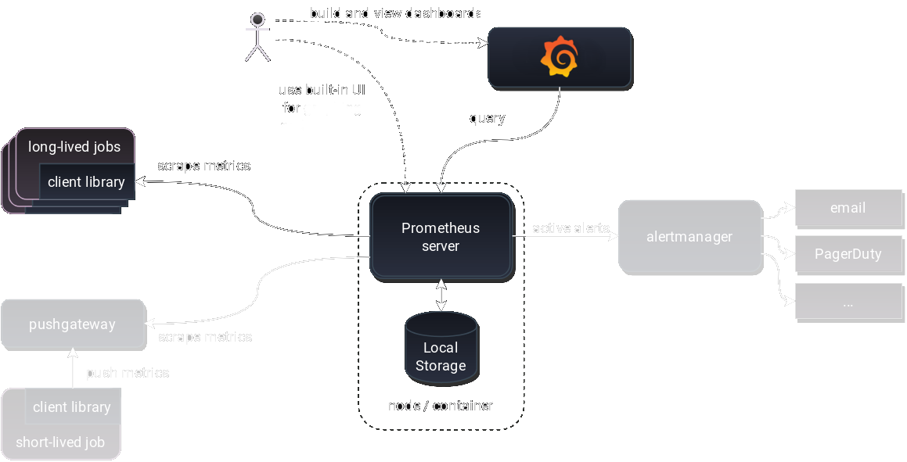
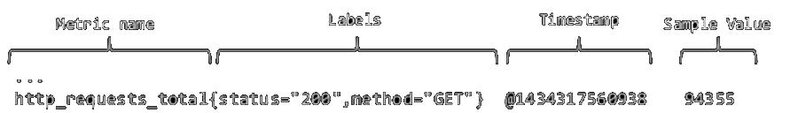
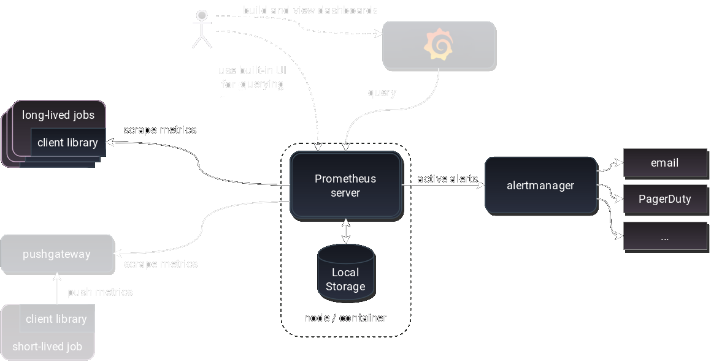
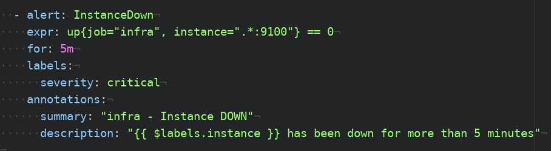

# Monitoring ## with Prometheus and Grafana <br><br> jcavalheiro@suse.de
## Prometheus * Originally built at SoundCloud * Prometheus works well for recording numeric time series * Data collection happens via a pull model over HTTP * Targets are set via static configuration or service discovery
## Architecture Overview 
## Prometheus metrics <br>  <br> * Metrics have a name, a set of labels, a timestamp and a value * 'job' and 'instance' labels are automatically added by Prometheus - instance - host from which you scrape metrics - job - collection of instances with the same purpose
### Metric types * Counter - cumulative values. ex: number of errors * Gauge - can go up or down. ex: temperature * Histogram - count observations in buckets * Summary - similar to histogram, but provides totals (sum and count) * Learn more: https://prometheus.io/docs/concepts/metric_types/
## Querying Prometheus ### PromQL * Functional expression language * Easily filter multi-dimensional time-series * Regex matching
## PromQL ## Demo
## Alert Manager 
### Alert Manager * Takes care of deduplicating, grouping, and routing - also takes care of silencing and inhibition of alerts * Integration with email, PagerDuty, or OpsGenie * Uses PromQL * HTTP API and cli tool
### Alert config example 
## Grafana * Metrics dashboard and graph editor * Multiple visualization options to help you understand your data * Supports dozens of databases * Plugin system
## Grafana ## Demo
## Thank you! <br> ### Questions? <br> https://cavalheiro.github.io/presentations/prom-grafana